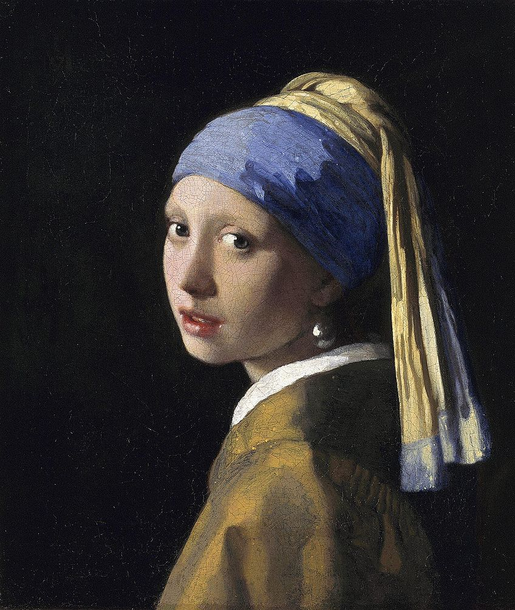
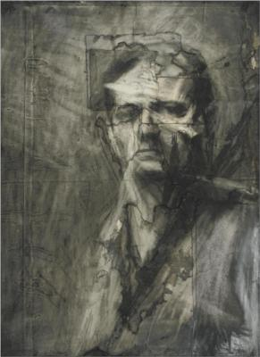

Johannes Vermeer
this art is Johannes'. She is a famous artist
who Vermeer generally used light
grounds
composed
of chalk (an inert, inexpensive filler), linseed oil,
white-lead and various combinations of earth pigments.

|
Frank Aurabach
Auerbach's technique is well described,
crafted and recorded by sitters and writers.
He sketches, he draws, he paints on board
and on canvas, in oil, as well as to a lesser
extent, acrylic.

In this one he uses chalk and charcoal. |